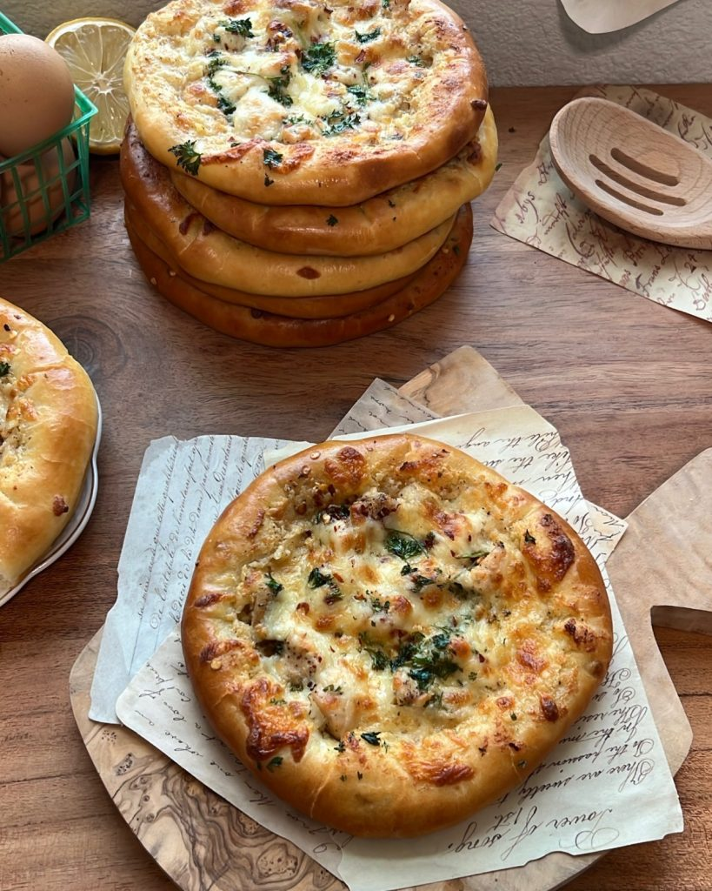

Mini Chicken Alfredo

A creamy Alfredo sauce laying on top of soft, pillowy homemade bread w/
cubed chicken & lots of freshly grated cheese. This recipe is all you need to
make your Saturday night dinners filled with impeccable flavor, and pure
happiness.
Today we’re making Mini Chicken Alfredo Pizzas! This recipe can
either be a wonderful addition to your dinner table as an appetizer,
or as the main course with a simple tossed salad on the side!
EQUIPMENT
- Stand mixer
- Bowl
- Whisk
- Cheese grater
- Pastry brush
- Baking sheet
- Measuring cups
- Measuring spoons
INGREDIENTS
Alfredo Sauce
- 8 tbsp Unsalted butter 113 grams
- 10 Cloves Minced Garlic you can use as little as 3 cloves or as much as
20 cloves – the amount of garlic is up to you
- 1 cup Heavy cream
- Salt (to taste)
- Black pepper (to taste)
- Garlic powder (to taste)
- 4 oz Freshly grated parmesan
Chicken
- 2 Chicken breasts , cubed seasoned with salt & black pepper
Sponge
- 1 tbsp Active dry yeast instant yeast will work as well
- 2 tbsp Sugar
- 1 cup Warm water (lukewarm water from the tap)
- 1 cup All purpose flour 125 grams
Dough
- 1 1/2 cups All purpose flour 188 grams
- 2 tsp Salt
- 1/4 cup olive oil
Cheese
- 20 oz Freshly grated mozzarella about 5 cups (this amount also includes
the cheese for the crust)
Egg wash
INSTRUCTIONS
Alfredo sauce & Chicken:
- Melt your 8 tbsp of butter down in a pan
- Sauté your minced garlic for 2-3 minutes or until fragrant (medium
heat). Be careful not to burn your garlic
- Pour in your heavy cream, mix, then throw in your freshly grated
parmesan.
- Mix on medium heat until your cheese is nice and melted. Then season
to taste with salt, black pepper, and garlic powder. Start with 1/4 tsp of each and adjust to your liking.
- After you Alfredo sauce is complete, cook your cubed chicken as well
- Set both to the side while you work on your dough
Prepare your sponge:
- Mix together your yeast, sugar, warm water, and flour in a bowl. Cover
with a damp paper towel, and allow to sit for 10 minutes.
Prepare your dough:
- After 10 minutes, add the rest of your flour (1 1/2 cups), salt, and olive
oil to your sponge.
- Take a large wooden spoon and roughly combine dough ingredients.
- Now, you can use a stand mixer – but if you don't have one, with lightly
floured hands, knead your dough for 8-10 minutes on a clean and
floured work surface until smooth.
- The dough will start off quite sticky, but after several minutes of
kneading the dough on an a floured work surface – it will eventually
come together beautifully. (Don’t add more than an extra 1/2 cup of
flour)
- Once your dough is smooth, cover and let it rest for 15 minutes.
- Next, separate your dough into 8 dough balls (each around 70 grams in
weight). Cover with a damp towel and allow to rest for another 10-15
minutes.
Shape your pizzas:
- After 10 minutes, lightly sprinkle flour on your work surface. Roll out
each dough ball about a half an inch thick.
- Once you've rolled out your dough – its time to build the crust.
- Add a light amount of freshly grated mozzarella to the edges of your
dough. Start folding your dough over the mozzarella, pressing down to
seal the edges. Watch video above for guidance.
- Preheat oven to 425°f (218°C)
Baking your pizzas:
- Add your stuffed, and shaped dough to a lined baking sheet.
- Brush egg wash on your crust, and spread your Alfredo sauce in the
center of your dough. (since we set our Alfredo sauce to the side while
making our dough, it should have cooled & thickened making it much
easier to spread)
- Add your chicken on top of your sauce, then add a layer of freshly
grated mozzarella.
- To finish them off add some fresh parsley, as well as some red pepper
flakes if you want a bit of heat.
- Bake for 15-20 minutes. Every oven preforms differently, keep a close
eye on them. You want the bottom of your pizzas, as well as your crust,
to be beautifully golden & not burnt
- Remove from the oven and allow your pizzas to cool for a couple
minutes.
- Serve fresh as an appetizer , or as your main course with a tossed salad
on the side!
- And you're done!
How to store them:
- Store them in an airtight container. Store at room temperature for a
couple days, or in the refrigerator for about a week.